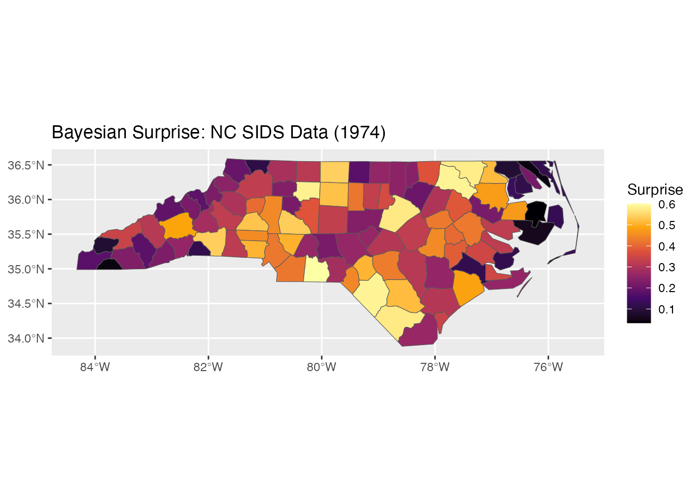
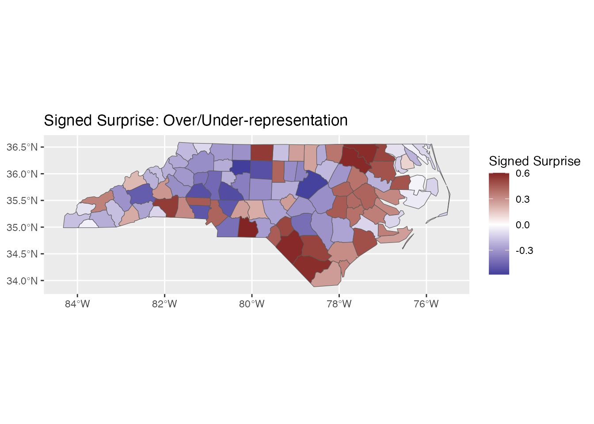

Overview
The bayesiansurprise package implements Bayesian
Surprise methodology for de-biasing thematic maps and data
visualizations. This technique, based on Correll & Heer’s “Surprise!
Bayesian Weighting for De-Biasing Thematic Maps” (IEEE InfoVis 2016),
helps identify truly surprising patterns in data by accounting for
common cognitive biases.
The Problem: Cognitive Biases in Data Visualization
When viewing thematic maps or data visualizations, viewers often fall prey to three cognitive biases:
- Base rate bias: Ignoring that larger populations naturally produce more events
- Sampling error bias: Treating small-sample estimates as equally reliable as large-sample ones
- Renormalization bias: Difficulty comparing rates across different scales
The Solution: Bayesian Surprise
Bayesian Surprise measures how much our beliefs change after observing data. Mathematically, it computes the KL-divergence between prior and posterior distributions across a space of models:
Higher surprise indicates observations that substantially change our beliefs.
Quick Start
library(bayesiansurprise)
#> bayesiansurprise: Bayesian Surprise for De-Biasing Thematic Maps
#> Inspired by Correll & Heer (2017) - IEEE InfoVis
library(sf)
#> Warning: package 'sf' was built under R version 4.5.2
#> Linking to GEOS 3.13.0, GDAL 3.8.5, PROJ 9.5.1; sf_use_s2() is TRUE
library(ggplot2)
#> Warning: package 'ggplot2' was built under R version 4.5.2Basic Usage with sf Objects
# Load North Carolina SIDS data
nc <- st_read(system.file("shape/nc.shp", package = "sf"), quiet = TRUE)
# Compute surprise: observed SIDS cases vs expected (births)
result <- surprise(nc, observed = SID74, expected = BIR74)
# View the result
print(result)
#> Bayesian Surprise Map
#> =====================
#> Models: 3
#> Surprise range: 0.0334 to 0.6008
#> Signed surprise range: -0.5834 to 0.6008
#>
#> Simple feature collection with 100 features and 16 fields
#> Geometry type: MULTIPOLYGON
#> Dimension: XY
#> Bounding box: xmin: -84.32385 ymin: 33.88199 xmax: -75.45698 ymax: 36.58965
#> Geodetic CRS: NAD27
#> First 10 features:
#> AREA PERIMETER CNTY_ CNTY_ID NAME FIPS FIPSNO CRESS_ID BIR74 SID74
#> 1 0.114 1.442 1825 1825 Ashe 37009 37009 5 1091 1
#> 2 0.061 1.231 1827 1827 Alleghany 37005 37005 3 487 0
#> 3 0.143 1.630 1828 1828 Surry 37171 37171 86 3188 5
#> 4 0.070 2.968 1831 1831 Currituck 37053 37053 27 508 1
#> 5 0.153 2.206 1832 1832 Northampton 37131 37131 66 1421 9
#> 6 0.097 1.670 1833 1833 Hertford 37091 37091 46 1452 7
#> 7 0.062 1.547 1834 1834 Camden 37029 37029 15 286 0
#> 8 0.091 1.284 1835 1835 Gates 37073 37073 37 420 0
#> 9 0.118 1.421 1836 1836 Warren 37185 37185 93 968 4
#> 10 0.124 1.428 1837 1837 Stokes 37169 37169 85 1612 1
#> NWBIR74 BIR79 SID79 NWBIR79 geometry surprise
#> 1 10 1364 0 19 MULTIPOLYGON (((-81.47276 3... 0.19528584
#> 2 10 542 3 12 MULTIPOLYGON (((-81.23989 3... 0.11076159
#> 3 208 3616 6 260 MULTIPOLYGON (((-80.45634 3... 0.29096840
#> 4 123 830 2 145 MULTIPOLYGON (((-76.00897 3... 0.11714867
#> 5 1066 1606 3 1197 MULTIPOLYGON (((-77.21767 3... 0.57773733
#> 6 954 1838 5 1237 MULTIPOLYGON (((-76.74506 3... 0.51437420
#> 7 115 350 2 139 MULTIPOLYGON (((-76.00897 3... 0.04355317
#> 8 254 594 2 371 MULTIPOLYGON (((-76.56251 3... 0.08634903
#> 9 748 1190 2 844 MULTIPOLYGON (((-78.30876 3... 0.37427103
#> 10 160 2038 5 176 MULTIPOLYGON (((-80.02567 3... 0.31685289
#> signed_surprise
#> 1 -0.19528584
#> 2 -0.11076159
#> 3 -0.29096840
#> 4 -0.11714867
#> 5 0.57773733
#> 6 0.51437420
#> 7 -0.04355317
#> 8 -0.08634903
#> 9 0.37427103
#> 10 -0.31685289Plotting Results
# Plot surprise values with ggplot2
ggplot(result) +
geom_sf(aes(fill = surprise)) +
scale_fill_surprise() +
labs(title = "Bayesian Surprise: NC SIDS Data (1974)")
# Plot signed surprise (shows direction of deviation)
ggplot(result) +
geom_sf(aes(fill = signed_surprise)) +
scale_fill_surprise_diverging() +
labs(title = "Signed Surprise: Over/Under-representation")
Understanding the Output
The surprise() function returns an object
containing:
- surprise: Non-negative values indicating magnitude of surprise (in bits)
- signed_surprise: Positive for over-representation, negative for under-representation
- model_space: The models used and their posterior weights
- posteriors: Per-observation posterior distributions
# Access surprise values directly
get_surprise(result, "surprise")[1:5]
#> [1] 0.1952858 0.1107616 0.2909684 0.1171487 0.5777373
# Access the model space
get_model_space(result)
#> <bs_model_space>
#> Models: 3
#> 1. Uniform (prior: 0.3333)
#> 2. Base Rate (prior: 0.3333)
#> 3. de Moivre Funnel (paper) (prior: 0.3333)Customizing Models
By default, surprise() uses three models: - Uniform: All
regions equally likely - Base Rate: Regions proportional to expected
values - de Moivre Funnel: Accounts for sampling variance
You can customize the model space:
# Create custom model space
custom_space <- model_space(
bs_model_uniform(),
bs_model_baserate(nc$BIR74),
bs_model_gaussian(),
prior = c(0.2, 0.5, 0.3) # Custom prior weights
)
result_custom <- surprise(nc, observed = SID74, expected = BIR74,
models = custom_space)
print(result_custom)
#> Bayesian Surprise Map
#> =====================
#> Models: 3
#> Surprise range: 0.4351 to 2.3054
#> Signed surprise range: -2.0136 to 2.3054
#>
#> Simple feature collection with 100 features and 16 fields
#> Geometry type: MULTIPOLYGON
#> Dimension: XY
#> Bounding box: xmin: -84.32385 ymin: 33.88199 xmax: -75.45698 ymax: 36.58965
#> Geodetic CRS: NAD27
#> First 10 features:
#> AREA PERIMETER CNTY_ CNTY_ID NAME FIPS FIPSNO CRESS_ID BIR74 SID74
#> 1 0.114 1.442 1825 1825 Ashe 37009 37009 5 1091 1
#> 2 0.061 1.231 1827 1827 Alleghany 37005 37005 3 487 0
#> 3 0.143 1.630 1828 1828 Surry 37171 37171 86 3188 5
#> 4 0.070 2.968 1831 1831 Currituck 37053 37053 27 508 1
#> 5 0.153 2.206 1832 1832 Northampton 37131 37131 66 1421 9
#> 6 0.097 1.670 1833 1833 Hertford 37091 37091 46 1452 7
#> 7 0.062 1.547 1834 1834 Camden 37029 37029 15 286 0
#> 8 0.091 1.284 1835 1835 Gates 37073 37073 37 420 0
#> 9 0.118 1.421 1836 1836 Warren 37185 37185 93 968 4
#> 10 0.124 1.428 1837 1837 Stokes 37169 37169 85 1612 1
#> NWBIR74 BIR79 SID79 NWBIR79 geometry surprise
#> 1 10 1364 0 19 MULTIPOLYGON (((-81.47276 3... 0.6758063
#> 2 10 542 3 12 MULTIPOLYGON (((-81.23989 3... 0.5344499
#> 3 208 3616 6 260 MULTIPOLYGON (((-80.45634 3... 0.8628723
#> 4 123 830 2 145 MULTIPOLYGON (((-76.00897 3... 0.5277768
#> 5 1066 1606 3 1197 MULTIPOLYGON (((-77.21767 3... 1.8731869
#> 6 954 1838 5 1237 MULTIPOLYGON (((-76.74506 3... 1.6093786
#> 7 115 350 2 139 MULTIPOLYGON (((-76.00897 3... 0.4450687
#> 8 254 594 2 371 MULTIPOLYGON (((-76.56251 3... 0.4979554
#> 9 748 1190 2 844 MULTIPOLYGON (((-78.30876 3... 1.1184478
#> 10 160 2038 5 176 MULTIPOLYGON (((-80.02567 3... 0.9808319
#> signed_surprise
#> 1 -0.6758063
#> 2 -0.5344499
#> 3 -0.8628723
#> 4 -0.5277768
#> 5 1.8731869
#> 6 1.6093786
#> 7 -0.4450687
#> 8 -0.4979554
#> 9 1.1184478
#> 10 -0.9808319Next Steps
- See
vignette("model-types")for details on all five model types - See
vignette("sf-workflow")for advanced spatial workflows - See
vignette("ggplot2-visualization")for visualization options - See
vignette("temporal-analysis")for time series and streaming data